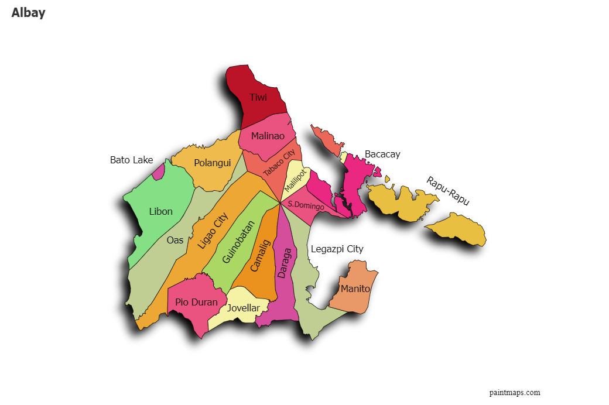
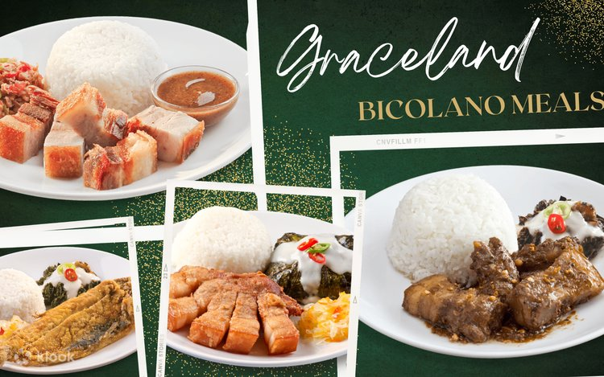
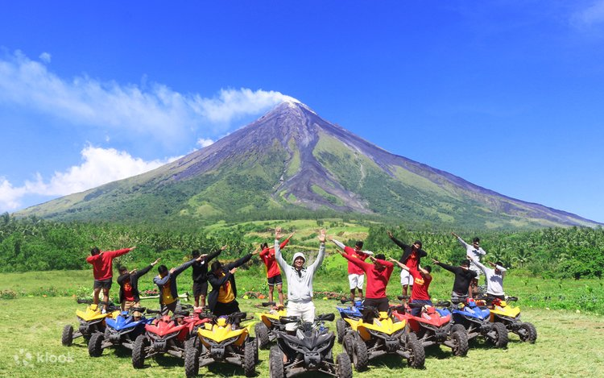

PROVINCE OF ALBAY
Albay, located in the heart of the Bicol Region, is famous for its majestic Mayon Volcano, stunning beaches, and rich cultural heritage.

ADMINISTRATIVE BOUNDARIES
Albayanos are the citizens of Albay, a province composed of 15 municipalities and 3 cities. Legazpi City is the capital.

HISTORICAL LANDMARKS
Witness the iconic Cagsawa Ruins, the silent remains of an 18th-century church with the majestic Mayon Volcano as its backdrop.

BICOLANO CUISINE
Savor the authentic taste of Albay with spicy Bicol Express and Pinangat, rich in coconut milk and local "siling labuyo."

EXTREME ADVENTURE
Feel the adrenaline with an ATV lava trail ride, bringing you closer to the rugged terrain formed by Mayon's past eruptions.
HIGHLIGHTS OF THE VIDEO
- ✓ Scenic and iconic views of Albay’s landscapes
- ✓ Natural wonders and cultural richness
- ✓ Close-up drone footage of Mayon's perfect cone
- ✓ Traditional Bicolano weaving and local crafts
- ✓ Spicy Bicol Express and coconut-based delicacies
- ✓ Adventure activities like ATV rides and hiking
© Tourism Philippines on YouTube